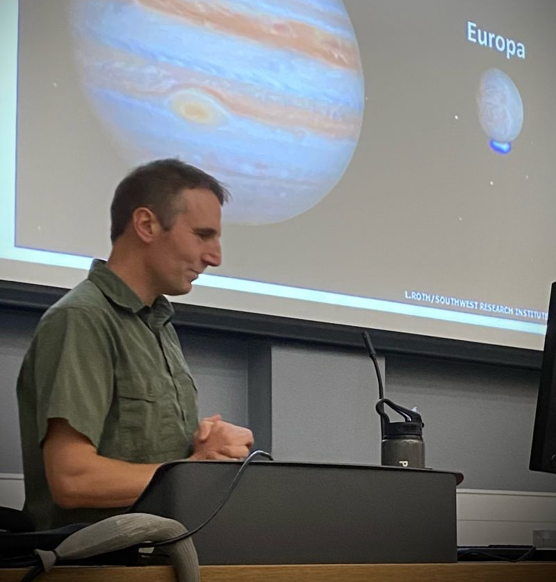

Teaching Dossier
Teaching Philosophy - Fostering a culture of co-creation
Research Outputs I have co-authored peer-reviewed research articles with six undergraduate students* (one more is currently under peer-review). Therefore, students are not passive recipients of knowledge but active contributors to the research process. I design modules and laboratory projects to expose undergraduates to open scientific questions and encourage them to pursue novel lines of inquiry. Students can therefore gain first-hand experience of: experimental design (or re-design!), the challenges of laboratory work or bioinformatics, data interpretation, scientific writing and then hopefully the process of peer-review.
*The following co-authors all conducted their work as undergraduate students, either as funded summer placement students, research placement students or as part of their final-year research projects: Stejskal, L., Broxham, A.H., Thomas, D.C., Cherrington, S.E., Malham, R. and Johnstone S.
Teaching Material The online book Hudd-R supports students in the Division of Biomedical and Life Sciences at the University of Huddersfield as they learn R. The book was co-designed and co-written with second-year students.
Programme Leadership
Course Leader of Biomedical Science (2020-2024) I managed the establishment of the Biomedical Science pathway at the University of Huddersfield from the initial market research and curriculum design through to internal validation and successful IBMS accreditation. In order to ensure that the program met all the learning outcomes specified by the IBMS, I designed three new modules (Haematology, Professional Skills 2 and Clinical Biochemistry). I also established formal links with various NHS Trusts, conducted work placement visits in NHS pathology laboratories and supported several students towards successful completion of the IBMS Registration Training Portfolio. Currently, I am Liaison Officer to the IBMS.
Module design/leadership
During my 17-year career at the University of Huddersfield I have acted as module leader for over 10 modules and made significant contributions to the teaching of on over 20 others. Some selected highlights are given below, with any module leadership indicated:
- Biochemistry 1 (Module Leader 2025-present) – Lectures on metabolism. Practicals on gel filtration and enzymology.
- Biochemistry 2 (Module Leader 2008-2022) - Delivered a practical in protein separation (ion exchange chromatography, SDS-PAGE), including an assessment of the commercial viability of protein production. Lectures on protein science, enzymology and laboratory techniques for protein purification/analysis.
- Biochemistry 3: Advanced Protein Science (Module Leader 2017-2024) – Lectures on bioinformatics, high-throughput methods in protein production and X-ray crystallography, protein structure prediction (Alphafold and RoseTTAFold), molecular dynamics simulations, single particle Cryo-EM. Workshops on molecular modelling (COOT and PyMOL).
- Structural and Functional Genomics (Module Leader 2015-2017) – Designed and delivered hands-on workshops in molecular modelling and X-ray crystallographic refinement (COOT and PyMOL). Lectures on Structural Biology (X-ray crystallography, NMR)
- Molecular Aspects of Drug Action (Module Leader 2017-2021) – Lectures on rational drug design and gene therapy, co-delivered workshops on pharmacokinetics. Lectures on the commercial production of biopharmaceuticals (e.g. hormones, monoclonal antibodies, PEGylation). A Case Study on the design of Angiotensin Converting Enzyme inhibitors.
- Professional Skills 2 (Module Leader 2020-present) – Co-deliver a 12-week series of workshops using R for data science.
- Haematology and Transfusion Science (Module Leader 2020-2023, lecturer 2024-present) - Deliver the Blood Film practical, including staining and examination under the microscope to identify and quantify white blood cell types. Lectures in basic immunology, transfusion science, sideroblastic anaemia, haemoglobinopathies, haemophilia/thrombophilia.
- Practical Skills in Clinical Pathology and Biochemistry (Module Leader 2020-present) – Designed and deliver a practical to quantify albumin by ELISA and Bromocresol Green assay then calculate the limit of detection using R and Excel. Lectures on Clinical Biochemistry.
- Immunology and Infection (Lecturer 2008-present) – Lectures relating to my research on Lyme disease with assessments based on clinical data.
- Physiology 1: Structure and Function (Lecturer 2023-present) – Lectures on muscle contraction and fatigue.
- Applied Molecular Genetics (Lecturer 2008-2023) – Lectures based on my research experience in recombinant protein production with a focus on E. coli and Pichia pastoris.
- Innovations of Drug Design and Development (Lecturer 2017-2025) – Lectures based on my early research on protein-ligand interactions and techniques for their investigation e.g. isothermal titration calorimetry.
At MSc level
- Molecular Medicine (SMA0051) - Functional Genomics, the limitations of Genome Wide Association Studies. A Case Study on the use of recombinant ACE2 for the treatment of SARS-CoV-2.
- Precision Medicine (SMP4008) Drug Design and Development (SMP0002) - Structural Biology and Rational Drug Design.
- Advanced Genomics and Gene Expression (SMB0002) - Structural Genomics
- Research Project (SMA0100, 60 Credits) - I deliver individual research projects, available to students on programmes: MSc Pharmaceutical and Analytical Science, MSc Analytical Bioscience and MSc Biomedical and Analytical Science.
